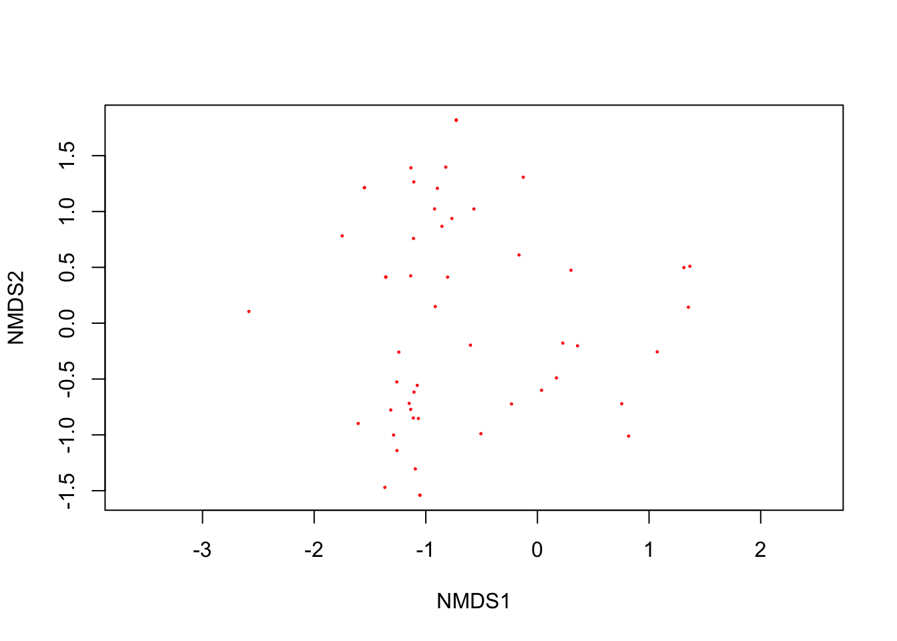
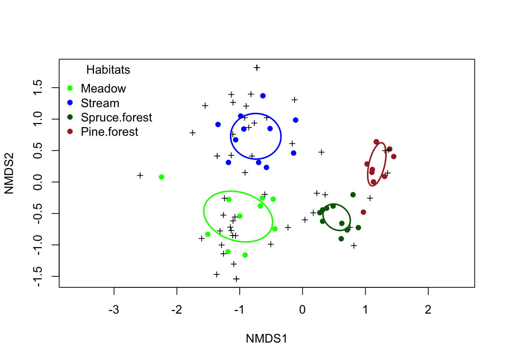
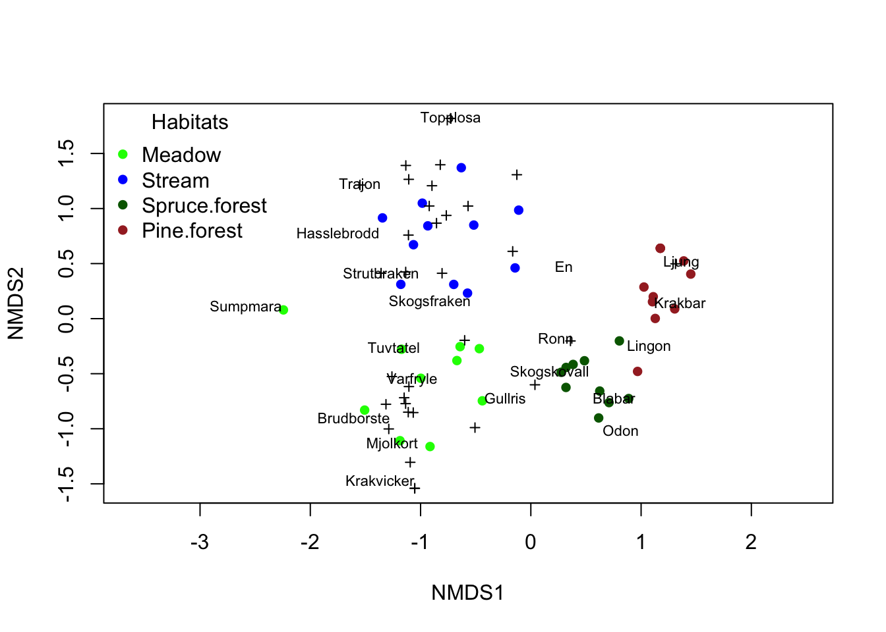
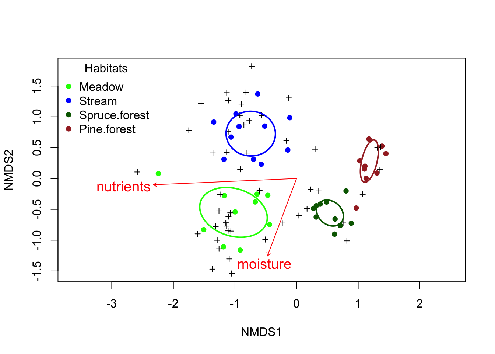

Ordinering med NMDS
Vi har tidigare alltid haft en responsvariebal i varje analys, det kan vara växtens höjd, antal ungar hos bofinken eller pH värdet i sjöarna. Man kallar sådana modeller för univariata, då de enbart har en beroende variabel (responsvariabel) per analys. Men ibland kanske man är intresserad av många responsvariabler? Säg att du har tittat på förekomsten av alla växtarter i två olika miljöer, och har hittat ett sjuttiotal arter. Du kan testa art för art om den skiljer sig i abundans mellan de två olika miljöerna, men det blir väldigt många univariata test. Kan man inte istället titta på om växtsamhället i helhet skiljer sig mellan de två olika miljöerna?
Det är sådana här frågor som multivariata metoder är användbara för, Multivarata netoder har fler än en beoroende variabel (reponsvariabel), där alla responsvariabler analyseras tillsammanans i samma analys.
Den vanligaste typen av multivariata metoder som ekologer använder sig av är ordinering. Metoden används i genetiken där man kan mäta genuttryck av tiotusentals gener och vill veta om genuttrycket skiljer sig åt mellan behandlingar, men även när man har mätt tiotals morfologiska egenskaper hos individer och vill se om de skiljer sig åt i form. Det vi skall fokusera på här är dock hur ordinering används inom analys av biodiversitetsdata. Det kan vara vilka arter du observerat vid inventeringar, men ett nytt forskningsfält som också använder liknande metoder är analys av mikrobiomdata samt metabarcoding-studier med eDNA.
Den multivariata ordinerings-analysen
Alla våra tidigare analyser har haft en responsvariabel, som vi ritat ut på y-axeln, och med vår prediktor på x-axeln har vi fått en graf i två dimensioner. Men hur gör vi om vi har ytterligare en responsvariabel? Kan vi ha ytterligare en axel? Ja, I princip kan vi det, om vi gör grafen i tre dimensioner (en 3D-graf). Men sedan blir det svårt, hur visualiserar man 4 dimensioner? Kan du föreställa dig det? Om vi har mätt abundans av 50 arter så får vi 50 axlar, det går inte ens att föreställa sig hur en sådan graf ser ut! Hur skall vi göra?
Det är här ordineringen kommer in. Alla dina datapunkter ligger i den multivarata rymden, som har lika många dimensioner som du har resppnsvariabler. Men ditt data ligger inte helt slumpmässigt i den här rymden. Om du exempelvis har mätt abundansen i replikerade kvadrater i en granskog och i en tallskog så kommer artsammansättningen i alla dina kvadrater i granskogen troligen påminna om varandra, och detsamma gäller i tallskogen. Det som den multivariata analysen gör är att den först söker efter den raka linjen genom din multivarata rymd som förklarar mest av variationen i ditt dataset, och det blir din första axel. Sedan letar den upp en linje som ligger vinkelrätt från din första axel och som förklarar mest av den kvarvarande variationen i din data. Det blir din andra axel. Nu har vi två axlar, vi kan göra en figur i två dimensioner.
Illustration av en ordinering
Figuren nedan visar multivariat data i 3 dimensioner (tänk tre arter kallade X, Y och Z), där varje prick motsvarar en kvadrat med ett visst antal individer av arterna X, Y och Z.
Grafen går att rotera med musen. Rotera den tills du ser dimensionen med mest variation, det borde bli din första axel.
Tryck sedan på “Lägg till Axel 1” - det är den första axeln av din ordinering, som förklarar mest variation
Lägg sedan till Axel 2 med motsvarande knapp, det är en axel som är vinkelrätt mot axel 1 och som förklarar näst mest variation.
Rotera figuren så att Axel 1 är vägrätt och Axel 2 är lodrätt. Det motsvarar din ordinering i 2 dimensioner!
Namnet på de två axlarna döps beroende på vilken typ av ordinering du gjort (se nedan). Om man gör en PCA heter de PC1 och PC2, gör man en NMDS heter de NMDS1 och NMDS2 osv. Om man gör en parametrisk analys (såsom PCA) kan man få reda på hur mycket variation som förklaras av varje ny axel eller deras eigenvärde, medan man för icke-parametriska analyser istället tittar på analysens stress-värde (se nedan) för att veta om ditt multivariata dataset går bra att visualisera i två dimensioner.
Olika multivariata analyser
Nedan går vi igenom de vanligaste multivariata analysmetoderna. Val av metod beror framför allt på om man har väldigt många nollor i sitt dataset (vilket är vanligt om man inventerat arter, man får nollor om arter saknas i vissa provytor).
| Analys | Datatyp | Känslighet för icke-normalfördelning | Beskrivning | Användning |
|---|---|---|---|---|
| PCA | Linjära data | Känslig | Om du har kontinuerliga data med få nollvärden. Ofta starkt korrelerade variablar | Genetiska data, morfologiska data där du vill reducera komplexiteten och antal dimensioner i datat |
| CCA | Linjära data | Mindre känslig | Ej kontinuerliga data, många nollvärden, men data måste vara i frekvenser (antal individer/täckningsgrad) | Biodiversitetsanalyser, korrelation med miljövariabler |
| NMDS | Icke-linjära data | Okänslig | Ej kontinuerliga data, många nollvärden och avvikande data eller data som inte är frekvenser (till exempel närvaro/frånvaro av art) | Biodiversitetsanalyser, korrelation med miljövariabler |
Som du ser är PCA den analysen som kräver mest av datat (normalfördelat och kontinuerligt) medan NMDS som är en icke-parametrisk metod kan hantera alla möjliga datatyper, inklusive data som visar på närvaro och frånvaro (skrivs som 1 och 0 i datasetet), men inte exakt antal individer/täckningsgrad. Eftersom metoden är robust och klarar alla typer av data från inventeringar kommer vi att först att lära oss den metoden.
NMDS - Non-Metric Multidimensional Scaling
Som hörs av medodens namn, är NMDS icke-metrisk, det vill säga att avståndet mellan arterna inte är linjärt. Till exempel kan vi tänka oss närvaro och frånvaro av en art. Om en art saknas så finns den inte, men betyder närvaro av blåbär i en ruta att det är lika många blåbär i alla rutor där vi noterat närvaro? Nä, det kan vara allt ifrån en liten buske till en ruta som är helt täckt av blåbär.
Läs in data
Vi har mätt täckningsgrad av ett antal växtarter i kvadrater i fyra habitat i skogar omkring Umeå, och undrar om växtsammhållerna skiljer sig åt mellan habitaten.
Ladda ner följande fil veg_umea.txt (högerklicka, välj “spara länk som”) och spara filen på din hårddisk i en mapp med ett lämpligt namn.
Fortsätt med att läsa in datasetet och ge det ett namn, i det här fallet kallar vi det veg_umea_data En detalerad beskrivning i hur man läser in filer finns i vår tidigare tutorial Läsa in data i R.
Glöm inte att dokumentera din kod i ett script, med kommentarer som förklarar vad du gör! Se vår tutorial om script om du behöver påminnelse om hur man skapar och använder script.
veg_umea_data<-read.table("data/veg_umea.txt",
header=T,
sep="\t",
dec=",") Inspektera data
Börja med att titta på datans struktur med str().
str(veg_umea_data)'data.frame': 42 obs. of 59 variables:
$ habitat : chr "Meadow" "Meadow" "Meadow" "Meadow" ...
$ moisture : int 2 2 2 2 2 2 2 2 2 2 ...
$ light : int 3 3 3 3 3 3 3 3 3 3 ...
$ nutrients : int 3 3 3 3 3 3 3 3 3 3 ...
$ angsfraken : int 0 0 0 0 0 0 0 0 0 0 ...
$ angsgroe : int 0 0 25 5 0 25 0 0 0 0 ...
$ angskovall : int 0 0 0 0 0 0 0 0 0 5 ...
$ angsyra : int 0 0 0 0 0 0 5 5 0 0 ...
$ Blabar : int 0 0 0 0 0 0 0 0 5 0 ...
$ Brudborste : int 5 25 25 0 0 5 0 5 0 0 ...
$ Brunror : int 0 80 0 0 0 25 5 0 0 0 ...
$ Dvarglummer : int 0 0 0 0 0 0 0 0 0 0 ...
$ Ekbraken : int 0 0 0 0 0 0 0 0 0 0 ...
$ Ekorrbar : int 5 0 25 5 5 0 5 5 25 0 ...
$ En : int 0 0 0 0 0 0 0 0 0 0 ...
$ Fladervanderot : int 0 0 0 0 0 0 0 0 0 0 ...
$ Gran : int 0 0 0 0 0 0 0 0 0 0 ...
$ Grasstjarnblomma : int 0 0 5 5 0 0 0 0 0 0 ...
$ Graal : int 0 0 0 0 0 0 0 0 0 0 ...
$ Gullris : int 0 0 0 0 5 0 0 0 5 5 ...
$ Hallon : int 0 0 0 5 0 0 0 0 0 0 ...
$ Harsyra : int 0 0 0 0 0 0 0 0 0 0 ...
$ Hasslebrodd : int 5 0 0 0 0 0 0 0 0 0 ...
$ Hultbraken : int 0 0 0 0 0 0 0 0 0 0 ...
$ Karrviol : int 0 0 0 0 0 0 0 0 0 0 ...
$ Krakbar : int 0 0 0 0 0 0 0 0 0 0 ...
$ Krakvicker : int 0 0 0 0 0 5 0 0 0 0 ...
$ Krustatel : int 0 0 80 0 25 0 80 0 80 25 ...
$ Lingon : int 0 0 0 0 0 0 0 0 0 0 ...
$ Ljung : int 0 0 0 0 0 0 0 0 0 0 ...
$ Lundstjarnblomma : int 0 0 0 0 0 0 0 0 0 0 ...
$ Midsommarblomster: int 0 5 25 25 25 25 5 5 0 5 ...
$ Mossviol : int 0 0 0 0 0 0 0 0 0 0 ...
$ Mjolkort : int 0 5 0 5 0 5 0 0 0 0 ...
$ Nordbraken : int 0 0 0 0 0 0 0 0 0 0 ...
$ Nordlundsarv : int 0 0 0 0 0 0 0 0 0 0 ...
$ Nysort : int 0 25 0 0 0 0 0 0 0 0 ...
$ Ormbar : int 0 0 0 0 0 0 0 0 0 0 ...
$ Odon : int 0 0 0 0 0 0 0 0 0 0 ...
$ Revlummer : int 0 0 0 0 0 0 0 0 0 0 ...
$ Rodblara : int 0 5 5 5 5 25 5 5 0 5 ...
$ Rodsvingel : int 0 0 25 0 0 0 0 0 0 0 ...
$ Rodven : int 0 80 25 80 25 0 0 25 25 25 ...
$ Rolleka : int 0 5 80 25 0 5 0 0 5 0 ...
$ Ronn : int 0 0 0 0 0 0 0 0 5 0 ...
$ Skogsbraken : int 0 0 0 0 0 0 0 0 0 0 ...
$ Skogsfraken : int 0 0 5 5 5 5 5 0 5 5 ...
$ Skogskovall : int 0 0 0 0 25 0 0 0 0 0 ...
$ Skogsviol : int 0 0 0 0 0 0 0 0 0 0 ...
$ Skogsstjarna : int 5 0 5 5 5 0 5 0 5 0 ...
$ Strutbraken : int 0 0 0 0 0 0 0 0 0 0 ...
$ Sumpmara : int 5 0 0 0 0 0 0 0 0 0 ...
$ Topplosa : int 0 0 0 0 0 0 0 0 0 0 ...
$ Trajon : int 0 0 0 0 0 0 0 0 0 0 ...
$ Tuvtatel : int 5 25 0 0 0 0 0 25 0 5 ...
$ Varfryle : int 0 0 0 25 25 80 25 5 25 0 ...
$ akerbar : int 0 5 0 0 0 0 0 0 0 0 ...
$ Mossa : int 0 80 80 80 80 25 80 5 80 80 ...
$ Lav : int 0 0 0 0 0 5 0 0 0 0 ...Gör en community matrix
Vi fortsätter med att förbereda vårt dataset för en NMDS-analys. Nästa steg är att konstruera en community matrix, dvs en matris som innehåller alla kolumner med arter, men inga andra kolumner (en matris som innehåller hela det biologiska samhället vi vill analysera). Som vi såg när vi körde str() så var de fyra första variablerna namn på behandlingarna eller miljövariabler, det är först i kolumn 5 som den första arten dyker upp. Vi vill alltså skapa ett nytt dataset, som börjar med kolumn 5 och fortsätter till den sista kolumnen.
För att välja ut kolumner ur ett dataset kan man använda operatorn []. Vi vill börja med kolumn nummer 5, men vilken är den sista kolumnen? med funktionen ncol() kan vi ta reda på antalet kolumner i vårt dataset.
ncol(veg_umea_data)[1] 59Vi ser att vi har 59 kolumner, och vårt nya dataset som är en community matrix skall därför sträcka sig från kolumn 5 till kolumn 59 av vårt originaldata. Vi kallar vårt nya dataset community_matrix
community_matrix <- veg_umea_data[,5:59]Gör en NMDS
Nu har vi en community matrix, och vi är redo att göra en ordinering! För att göra det börjar vi med att läsa in paketet vegan. Om du inte har installerat det sidan tidigare kör du först koden install.packages("vegan") innan du läser in paketet.
library(vegan)Loading required package: permuteVi använder oss av funktionen metaMDS() där vi anger vår community matrix, hur distanserna skall beräknas (det lämpligaste för artförekomst är Bray-Curtis, vilket kallas "bray") och slutligen antalet dimensioner vi vill visualisera (normalt sett använder vi oss av 2 dimensioner, anges med k = 2)
nmds_umea <- metaMDS(community_matrix,
distance = "bray",
k = 2)Vi kör koden, och får ett antal rader som börjar med Run... R analyserar nu ditt data genom en iterativ process där den söker efter den bästa visualiseringen av din data i två dimensioner. Det kan gå sekundsnabbt eller ta längre tid, beroende på storleken av din community matrix.
När vi är klara väljer vi att titta på lite information om vår NMDS-analys, och vi fokuserar på stress-värdet.
nmds_umea
Call:
metaMDS(comm = community_matrix, distance = "bray", k = 2)
global Multidimensional Scaling using monoMDS
Data: wisconsin(sqrt(community_matrix))
Distance: bray
Dimensions: 2
Stress: 0.146319
Stress type 1, weak ties
Best solution was repeated 7 times in 20 tries
The best solution was from try 3 (random start)
Scaling: centring, PC rotation, halfchange scaling
Species: expanded scores based on 'wisconsin(sqrt(community_matrix))' Stress-värden
När man utvärderar en NMDS skall man fokusera på stress-värdet. Vi ser raden Stress: 0.146319 som visar hur väl din community matrix kan representeras i de antal dimensionerna du valt (i de flesta fall 2 dimensioner). Följande tabell ger en indikation av hur du skall tolka ditt stress-värde.
| Stress-värde | Tolkning |
|---|---|
| < 0.05 | Din NMDS är en excellent representation av dina data |
| < 0.10 | En bra ordinering, mycket tolkningsbar |
| < 0.20 | En användbar ordinering, men detaljerna kan vara missvisande, tolka med försiktighet |
| > 0.35 | Din ordinering är helt slumpmässig och går inte att tolka |
Vi har ett stress-värde på 0.146, så ordineringen är användbar men skall tolkas med viss försiktighet. Det skall noteras att ju större dataset man har, desto svårare är det att visualisera det i två dimensioner, så man skall inte förvänta sig väldigt låga stress-värden i sådana fall.
Enkel figur
Vi börjar med en enkel figur av vår nmds-analys, utan några specificeringar.
plot(nmds_umea)
Vi får nu en graf i två dimensioner. De två axlarna är NMDS1 (axeln som förklarar mest variation i ditt dataset) och NMDS2 (den axeln som ligger vinkelrätt mot NMDS1 och som förklarar näst mest variation). Cirklarna visar positionen av dina provytor, och de röda kryssen visar positionen av dina arter.
Vi ser att cirklarna inte ligger på samma ställe, vilket betyder att våra provytor verkar ha någorlunda olika växtsamhällen. Likaså är kryssen ojämnt spridda, vilket tyder på att arterna inte är jämt fördelade mellan provytorna.
Men vi hade gjort våra provytor i fyra olika habitat (skogstyper), skiljer de sig från varandra? Det är svårt att se, eftersom vi inte vet vilka cirklar som representerar vilka habitat. Vi behöver därmed arbeta vidare med figuren!
Fullständig figur
Vi väljer att rita ut våra fyra olika habitat i olika färg, om då cirklarna som representerar ett visst habitat ligger nära varandra, silkt från cirkalr som representerar ett annat habitat, kan vi tolka det som att habitaten skiljer sig åt i växtsamhälle.
Först behöver vi skapa en vektor som associerar varje provruta (site) med en vegetationstyp (dvs en nivå ur variabeln habitat). Våra habitat låg i den första kolumnen i vårt dataset veg_umea_data, vi väljer ut den kolumnen med operatorn [] och sparar i en ny vektor som vi kallar habitats.
habitats <- veg_umea_data[,1]
habitats [1] "Meadow" "Meadow" "Meadow" "Meadow"
[5] "Meadow" "Meadow" "Meadow" "Meadow"
[9] "Meadow" "Meadow" "Stream" "Stream"
[13] "Stream" "Stream" "Stream" "Stream"
[17] "Stream" "Stream" "Stream" "Stream"
[21] "Stream" "Spruce.forest" "Spruce.forest" "Spruce.forest"
[25] "Spruce.forest" "Spruce.forest" "Spruce.forest" "Spruce.forest"
[29] "Spruce.forest" "Spruce.forest" "Spruce.forest" "Pine.forest"
[33] "Pine.forest" "Pine.forest" "Pine.forest" "Pine.forest"
[37] "Pine.forest" "Pine.forest" "Pine.forest" "Pine.forest"
[41] "Pine.forest" "Pine.forest" Xi ser alla våra fyra habitat listade.Vi vill även att de olika habitaten skall ha olika färg, så vi behöver skapa en ny variabel med färger. Vi börjar med att ange en palett, dvs vad varje habitat skall ha för färg. Välj gärna färger som på något sätt kan symbolisera dina kategorier.
my_palette <- c("Meadow" = "green",
"Stream" = "blue",
"Spruce.forest" = "darkgreen",
"Pine.forest" = "brown"
)Sedan skapar vi färg-vektorn color_vector med funktionen match().
color_vector <- my_palette[match(habitats, names(my_palette))]Efter det gör vi om habitat till en faktor (vilket krävs för senare steg) men samtidigt ser vi till att nivåerna i habitat är direkt kopplade till färgerna, så att inte ordningen av dem tappas bort (det är lätt hänt när R gärna sorterar om ordningen när den gör om en variabel till en faktor)
habitats <- factor(habitats, levels = names(my_palette))Slutligen gör vi en plot! Vi gör den i flera steg.
Först ritar vi vår ordineringsyta, men utan några data illustrerade i den (anges med
type = "n").Sedan lägger vi till cirklar får provytor, och ger dem färgerna från vår
color_vector.Efter det lägger vi till kryss för våra arter
Slutligen lägger vi till en teckenförklaring.
"topleft"betyder att vi lägger den längs upp till vänster. Andra val är exempelvis “bottomleft","topright"osv. Välj det som bäst passar dina data, så att den inte täcker några punkter i grafen.
ordiplot(nmds_umea, type="n") # En tom plot (anges med type = "n")
points(nmds_umea, "sites", col = color_vector, pch = 16, cex = 1) # Provytor
points(nmds_umea,"species", pch=3,col="black") # Arter
legend("topleft", # Teckenförklaring
legend = names(my_palette),
col = my_palette,
pch = 16,
title = "Habitats",
bty = "n") 
Vi kan även välja att göra ellipser runt våra habitat, anges med ordiellipse()
ordiplot(nmds_umea, type = "n")
points(nmds_umea, "sites", col = color_vector, pch = 16, cex = 1) # Provytor
points(nmds_umea, "species", pch = 3, col = "black") # Arter
ordiellipse(nmds_umea, # Ellipser
groups = habitats,
col = my_palette,
kind = "sd", # eller "se"
lwd = 2,
label = FALSE)
legend("topleft", # Teckenförklaring
legend = names(my_palette),
col = my_palette,
pch = 16,
title = "Habitats",
bty = "n") Ytterligare ett alternativ är att visualisera centroiderna (centerpunktion i varje habitat) samt knyta ihop varje punkt med sin centroid. Fördelen med det här är att det direkt korresponderar med de statistiska testen som vi kommer att gå igenom nedan, där vi testar om våra habitat skiljer sig åt.
Först extraherar vi våra centroider från vår ordinering och sparar dem i vektorn centroids
centroids <- aggregate(nmds_umea$points, by = list(habitats), FUN = mean)Sedan använder vi det i vår figur. Vi väljer även att lägga till linjer från våra centroider till våra provytor, med hjälp av funktionen ordispider()
ordiplot(nmds_umea, type = "n")
points(nmds_umea, "sites", col = color_vector, pch = 16, cex = 1) # Provytor
points(centroids[,2:3],# Centroider
pch = 1, # symbol, välj något annat än dina sites
cex = 2,
lwd = 2,
col = my_palette[centroids$Group.1])
ordispider(nmds_umea, # Linjer från centroiden till dina provytor
groups = habitats,
col = my_palette,
lwd = 1)
points(nmds_umea, "species", pch = 3, col = "black") # Arter
legend("topleft", # Teckenförklaring
legend = names(my_palette),
col = my_palette,
pch = 16,
title = "Habitats",
bty = "n")
Vi kan som en alternativ figur välja att skriva ut vissa av artnamnen. Det gör vi genom att använda oss av funktionen orditorp(), där vi specificerar att det är artnamnen vi vill skriva ut.
ordiplot(nmds_umea, type="n") # En tom plot (anges med type = "n")
points(nmds_umea, "sites", col = color_vector, pch = 16, cex = 1) # Provytor
orditorp(nmds_umea,display="species", # Arter med artnamn
pch=3,
col="black",
air=2 # Justera air för att undvika överlappande artnamn.
)
legend("topleft", # Teckenförklaring
legend = names(my_palette),
col = my_palette,
pch = 16,
title = "Habitats",
bty = "n")air = specifiserar hur mycket luft det skall vara mellan artnamnen. Om man sätter den till air = 0 så skrivs artnamn ovanpå varandra, vilket kan göra det hela oläsligt om man har många arter som följs åt. Testa olika värden på air tills du hittar ett som är lämpligt. Arter som inte skrivs ut visas med artsymbolen+.
Jag tycker att det i många fall kan vara intressant att skriva ut artnamnen, för att se vilka arter är specifika för vilka samhällen. Notera dock att alla arter inte skrivs ut om man har högre värden på air än 0, så man kan inte se de arter som inte skrivs ut, de kan dockl vara lika viktiga som de som skrivs ut. Anledningen till att de inte skrivs ut är ju för att de ligger så nära de andra artnamnen att de skulle täcka dem!
Vad skall vara med på grafen?
Vilket sätt att illustrera skall man välja? Det beror delvis hur ditt dataset ser ut, och hur rörig grafen blir. Ha alltid med cirklar för provytor, kryss för arter och en teckenförklaring om du har mer än en grupp av provytor (olika habitat, olika behandlingar eller jämförelser). Centroid är bra tt ha med om man även gör ett statistiskt test på om grupperna skiljer sig åt i artsammansättning, och ellipser *eller *linjer som binder ihop provytorna kan ge ökad förståelse om grafen inte blir för plottrig.
Statistisk analys - skiljer sig våra habitat?
Vi ser i vår ordineringsgraf att det ser ut som om våra habitat skiljer sig åt i artsammansättning. Men kan vi testa det statistiskt? Ja, det skall vi titta på nu!
Vi använder oss av en teknik som kallas PERMANOVA. Det är en multivartiat ANOVA (dvs en MANOVA), som använder sig av permutationer (därav namnet PERMANOVA). Permutationer är ett icke-parametriskt typ av test - datat blandas om ett stort antal gånger och varje gång görs ett statistiskt test. Om dina fakltiska fördelning av data är mer extrem än vad det blir om man slumpmässigt omfördelar dina data mellan dina grupper kan vi dra slutsatsen att resultatet inte beror på slumpen.
Nollhypotesen i en PERMSANOVA är att dina grupper inte skiljer sig i centroidernas placering och/eller i datans utspridning (dispersion).
m.habitats <- adonis2(community_matrix ~ habitats, method = "bray")
m.habitatsPermutation test for adonis under reduced model
Permutation: free
Number of permutations: 999
adonis2(formula = community_matrix ~ habitats, method = "bray")
Df SumOfSqs R2 F Pr(>F)
Model 3 6.9658 0.5854 17.885 0.001 ***
Residual 38 4.9334 0.4146
Total 41 11.8992 1.0000
---
Signif. codes: 0 '***' 0.001 '**' 0.01 '*' 0.05 '.' 0.1 ' ' 1Vi ser att p-värdet (kallat Pr(>F)) är mindre än 0.05, dvs vi har en signifikant effekt av habitat. Deras centroider ligger alltså på olika platser i ordineringen.
Post-hoc test på habitaten
Eftersom vi har fler än två habitat så vet vi dock inte om alla skiljer sig från varandra, eller om bara någon eller några gör det. Vi behöver genomföra ett post-hoc test!
Det enklaste sättet är att använda paketet pairwiseAdonis, men tyvärr behöver det installeras manuellt via Github (se beskrivning om du är intresserad). Därför gör vi det med hjälp av paketet vegan som vi redan använder, även om det är mer omständigt rent kodmässigt. Det är en hel del kod nedan, men det enda vi behöver göra är att kontrollera vad vår variabel habitat är inskriven (rad 1, 4 och 6), liksom vår community matrix (som vi kallade community_matrix, rad 6). Det är det enda som du kan behöva ändra i koden (om du inte har gett dem samma namn som jag gjort). Resten av koden skall lämnas oförändrad.
pairs <- combn(unique(habitats), 2, simplify = FALSE)
pairwise_results <- do.call(rbind, lapply(pairs, function(pair) {
subset_idx <- habitats %in% pair
mod <- adonis2(community_matrix[subset_idx, ] ~ habitats[subset_idx],
method = "bray",
permutations = 999)
data.frame(
group1 = pair[1],
group2 = pair[2],
F = mod$F[1],
R2 = mod$R2[1],
p = mod$`Pr(>F)`[1]
)
}))
pairwise_results$p_adj <- p.adjust(pairwise_results$p, method = "BH")
pairwise_results$contrast <- paste(pairwise_results$group1,
"vs",
pairwise_results$group2)
pairwise_results[, c("contrast", "F", "R2", "p", "p_adj")] contrast F R2 p p_adj
1 Meadow vs Stream 8.519836 0.3095889 0.001 0.001
2 Meadow vs Spruce.forest 11.589142 0.3916687 0.001 0.001
3 Meadow vs Pine.forest 17.695218 0.4822214 0.001 0.001
4 Stream vs Spruce.forest 21.942916 0.5359393 0.001 0.001
5 Stream vs Pine.forest 22.488844 0.5292882 0.001 0.001
6 Spruce.forest vs Pine.forest 39.070244 0.6728101 0.001 0.001Vi tittar på p_adj, som är p-värdet som är justerat för multipla tester (det görs alltid i post-hoc test). Vi ser att alla p-värden är mindre än 0.05, dvs alla habitat är skilda från varandra i artsammansättning!
Utvärdera din modell
En förutsättning för en PERMANOVA är att dina grupper inte skiljer sig åt i dispersion (dvs hur utspridda de är i ordineringen). Om så är fallet kan skillnaden i din PERMANOVA delvis bero på olika dispersion.
Vi testar det enkelt med funktionen betadisper(). Vi anger vår community matrix och våra habitat. Vi sparar resultatet i ett objekt som vi kallar disp_habitat
disp_habitat <- betadisper(vegdist(community_matrix), habitats)Först tittar vi på en ANOVA-tabell av vår dispersal, med funktionen anova()
anova(disp_habitat)Analysis of Variance Table
Response: Distances
Df Sum Sq Mean Sq F value Pr(>F)
Groups 3 0.49897 0.166322 5.8165 0.002254 **
Residuals 38 1.08660 0.028595
---
Signif. codes: 0 '***' 0.001 '**' 0.01 '*' 0.05 '.' 0.1 ' ' 1Vi ser att vi har signifikant skillnad i dispersion mellan våra habitat. FÖr att veta vilka habitat som skiljer sig i dispersion gör vi ett post-hoc test med funktionen TukeyHSD()
TukeyHSD(disp_habitat) Tukey multiple comparisons of means
95% family-wise confidence level
Fit: aov(formula = distances ~ group, data = df)
$group
diff lwr upr p adj
Stream-Meadow -0.03383843 -0.23232823 0.16465137 0.9676509
Spruce.forest-Meadow -0.28245373 -0.48561451 -0.07929294 0.0033048
Pine.forest-Meadow -0.15049719 -0.34898699 0.04799261 0.1926781
Spruce.forest-Stream -0.24861530 -0.44710510 -0.05012550 0.0091456
Pine.forest-Stream -0.11665877 -0.31036498 0.07704745 0.3809811
Pine.forest-Spruce.forest 0.13195653 -0.06653327 0.33044633 0.2956771Vi ser att våra signifikanta p-värden är i kontrasterna Spruce.forest-Meadow samt Spruce.forest-Stream. De skillnaderna vi upptäcker i artsammansättning mellan dessa habitat kan alltså till viss del bero på att Spruce.forest har lägre dispersion.
Miljövariabler
Vi har även mätt tre miljövariabler, nämligen fuktighet, ljus och näringshalt. Hur är de korrelerade med våra samhällen?
Vi börjar med att skapa ett dataset av våra miljövariabler. Om du på nytt kör koden str(veg_umea_data) ser du att kolumn 2-4 representerar miljövariabler. Vi väljer ut de variablerna med operatorn [] och sparar i ett nytt dataset som vi kallar environment_data
environment_data <- veg_umea_data[,2:4]
names(environment_data)[1] "moisture" "light" "nutrients"Vi analyserar … med hjälp av funktionen envfit() och sparar resultatet i objektet m.environment
m.environment <- envfit(nmds_umea ~ moisture + light + nutrients,
data = environment_data,
permutations = 999)Till vänster om ~skriver vi ut vår ordinering nmds_umea och till höger har vi våra miljövariablar uppradade moisture + light + nutrients. Datasetet som används är environment_data och vi gör alltid 999 permuteringar.
Vi skriver in objektets namn för att titta på resultatet
m.environment
***VECTORS
NMDS1 NMDS2 r2 Pr(>r)
moisture -0.35205 -0.93598 0.2785 0.002 **
light -0.33755 0.94131 0.0276 0.570
nutrients -0.99905 -0.04361 0.8377 0.001 ***
---
Signif. codes: 0 '***' 0.001 '**' 0.01 '*' 0.05 '.' 0.1 ' ' 1
Permutation: free
Number of permutations: 999Vi ser att moisture (fuktighet) och nutrients (näring) är signifikant associerat med växtsamhällernas komposition, medan light (ljus) inte är det. Notera att varje variabel är testad för sig, så om flera variabler korrelerar med varandra så kan de representera samma ekologiska gradient.
Figur med miljövariabler
Låt oss lägga till miljövariablerna i vår figur, och enbart rita ut de signifikanta variablerna.
ordiplot(nmds_umea, type = "n")
points(nmds_umea, "sites", col = color_vector, pch = 16, cex = 1)
points(nmds_umea, "species", pch = 3, col = "black")
ordiellipse(nmds_umea,
groups = habitats,
col = my_palette,
kind = "sd", # or "se"
lwd = 2,
label = FALSE)
legend("topleft",
legend = names(my_palette),
col = my_palette,
pch = 16,
title = "Habitats",
bty = "n")
plot(m.environment, # Den nya koden som lägger till miljövariabler
p.max = 0.05, # Det maximala p-värdet för att miljövariabeln skall ritas ut
col = "red",
cex = 1.2)
Nu ser vi hur våra miljövariabler är associerade med vår ordinering. SOm förväntat är miljöerna vid ängen och bäcken mer näringsrika. Det kan verka förvånande att vektorn för moisture går bort från lokalerna vid bäcken, trots att de också var ganska fuktiga, men även granskogen var fuktig och ängen var en fuktäng. Även om moisture var signifikant så hade den en myckel lägre förklaringsgrad (r2 = 0.28) än vad miljövektorn nutrients har (r2 = 0.84).